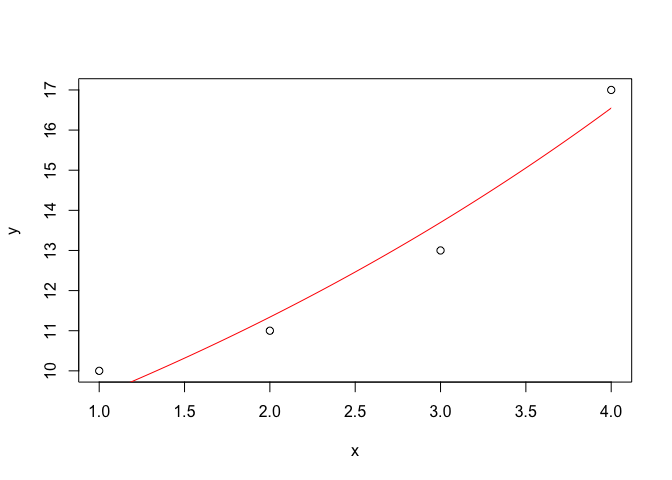

Chapter 16 APPENDIX: A very gentle introduction to R
16.1 What is R?
R is a statistical software; it is open source and it works under a freeware GNU licence. It is very powerful, but it has no graphical interface and, thus, we need to write a few lines of cod, which is something we may not be used to do.
16.2 Installing R and moving the first steps
In order to get started, please, follow these basic steps:
- Install R from: https://cran.r-project.org. Follow the link to CRAN (uppermost right side), select one of the available mirrors (you can simply select the first link on top), select your Operating System (OS) and download the base version. Install it by using all default options.
- Install RStudio from: https://rstudio.com/products/rstudio/. Select RStudio Desktop version, open source edition and download. Install it by using all default options.
- Launch RStudio.
You will see that RStudio consists of four panes, even hough, at the beginning, we will only use two of them, named: (1) SOURCE and (2) CONSOLE. The basic principle is to write code in the SOURCE pane and send it to the CONSOLE pane, by hitting ‘ctrl-R’ or ‘ctrl-Return’ (‘cmd-Return’ in Mac OSx). The SOURCE pane is a text editor and we can save script files, by using the ‘.R’ extension. The CONSOLE pane is where the code is processed, to return the results.
Before we start, there are a few important suggestions that we should keep into consideration, in order to save a few headackes:
- unlike most programs in WINDOWS, R is case-sensitive and, e.g., ‘A’ is not the same as ‘a.’ Please, note that most errors in R are due to small typos, which may take very long to be spotted!
- Code written in the SOURCE pane MUST BE sent to the console pane, otherwise it is not executed. It’s like writing a WhatsApp message: our mate cannot read our message until we send it away to him!
- Spaces can be used to write clearer code and they are usually allowed, except within variable names, function names and some operators composed by more than one character.
- It is useful to comment the code, so that, in future times, we can remember what we intended to do, when we wrote that code. Every line preceded by a hash symbol (#) is not executed and it is regarded as a comment.
16.3 Assignments
In R, we work with objects, that must be assigned a name, so that they can be stored in memory and easily recalled. The name is a variable and it is assigned by the assignment operator ‘<-’ (Less-then sign + dash sign). For example, the following code assigns the value of 3 to the ‘y’ variable. The content of a variable can be visualised by simply writing its names and sending it to the console.
y <- 3
y
## [1] 316.4 Data types and data objects
In R, as in most programming languages, we have different data types that can be assigned to a variable:
- numeric (real numbers)
- integer (natural numbers)
- character (use quotation marks: “andrea” or “martina”)
- factor
- logic (boolean): TRUE or FALSE
Depending on their type, data can be stored in specific objects. The most important object is the vector, that is a uni-dimensional array, storing data of the same type (either numeric, or integer, or logic… you can’t mix!). For example, the following box shows a vector of character strings and a vector of numeric values: we see that the vector is created by the c() function and the elements are separated by commas.
sentence <- c("this", "is", "an", "array", "of", "characters")
x <- c(12, 13, 14)The factor vector is different from a character vector, as it is used to store character values belonging to a predefined set of levels; the experimental treatment variables (experimental factors, as we called them in Chapter 2) are usually stored as R factors. The code below shows a character vector that is transformed into a factor, by using the factor() function.
treat <- c("A", "A", "B", "B", "C", "C")
treat
## [1] "A" "A" "B" "B" "C" "C"
factor(treat)
## [1] A A B B C C
## Levels: A B CBy now, we have already used a couple of functions ad we have noted that they are characterised by a name followed by a pair of round brackets (e.g., c() or factor()). The arguments go inside the brackets, but we will give more detail later on.
16.5 Matrices
Vectors are uni-dimensional arrays, while matrices are bi-dimensional arrays, with rows and columns. The matrix object can be used to store only data of the same type (like a vector) and it is created by using the matrix() function. The first argument to this function is a vector of values, the second argument is the number of rows and the third one is the number of columns. The fourth argument is logical and it specifies whether the matrix is to be populated by row (‘byrow = TRUE’) or by column (‘byrow = FALSE’).
z <- matrix(c(1, 2, 3, 4, 5, 6, 7, 8),
2, 4, byrow=TRUE)
z
## [,1] [,2] [,3] [,4]
## [1,] 1 2 3 4
## [2,] 5 6 7 816.6 Dataframes
The dataframe is also a table (like a matrix), but columns can contain data of different types. It is the most common way to store the experimental data and it should be orginised in a ‘tidy’ way: with one experimental unit per row and all the traits of each unit in different columns. In the box below we create three vectors and combine them in a dataframe.
plot <- c(1, 2, 3, 4, 5, 6)
treat <- factor(c("A", "A", "B", "B", "C", "C"))
yield <- c(12, 15, 16, 13, 11, 19)
dataset <- data.frame("Plot" = plot,
"Treatment" = treat, "Yield" = yield)
dataset
## Plot Treatment Yield
## 1 1 A 12
## 2 2 A 15
## 3 3 B 16
## 4 4 B 13
## 5 5 C 11
## 6 6 C 1916.7 Working with objects
If we have created a number of objects and stored them in memory, we might be interested in viewing them or accessing some of their elements. Objects can be simply viewed by using their name, as shown below.
z
## [,1] [,2] [,3] [,4]
## [1,] 1 2 3 4
## [2,] 5 6 7 8With objects containing more than one value (vectors, matrices or dataframes) we can use indexing to retreive an element in a specific position. Indexing is performed by using square brackets, containing the index or a list of indices, for multi-dimensional objects.
x[1] # First element in a vector
## [1] 12
z[1, 3] # Element in first row and third column, in a dataframe or matrix
## [1] 3
dataset[ ,1] # First Column
## [1] 1 2 3 4 5 6
dataset[1, ] # First Row
## Plot Treatment Yield
## 1 1 A 12Column vectors in dataframes can also be accessed by using their name and the ‘dollar’ sign, as shown below.
dataset$Plot
## [1] 1 2 3 4 5 6It is also useful to ask for infos about objects, which can be done by using two functions:
str(): tells us the structure of an objectsummary()- summarizes the main traits of an object
str(dataset)
## 'data.frame': 6 obs. of 3 variables:
## $ Plot : num 1 2 3 4 5 6
## $ Treatment: Factor w/ 3 levels "A","B","C": 1 1 2 2 3 3
## $ Yield : num 12 15 16 13 11 19
summary(dataset)
## Plot Treatment Yield
## Min. :1.00 A:2 Min. :11.00
## 1st Qu.:2.25 B:2 1st Qu.:12.25
## Median :3.50 C:2 Median :14.00
## Mean :3.50 Mean :14.33
## 3rd Qu.:4.75 3rd Qu.:15.75
## Max. :6.00 Max. :19.0016.8 Expressions, functions and arguments
Expressions can be used to return results or store them in new variables.
2 * y
## [1] 6
f <- 2 * y
f
## [1] 6As we anticipated above, functions are characterised by a name and a list of arguments in brackets.
log(5)
## [1] 1.609438Very often, there are multiple arguments and we have to pay some attention on how to supply them. We can either:
- supply them in the exact order with which R expects them
- use argument names
We can see the required list of arguments and their order by using the R help, that is invoked by a question mark followed by the function name, as shown in the example below.
?log #Getting help
# The two arguments are the value and the base for logarithm
log(100, 2) # Supplied in order
## [1] 6.643856
log(100, base = 2) # Supplied with names
## [1] 6.643856
log(base=2, 100) # Different order, but correct syntax
## [1] 6.643856
log(2, 100) # Wrong!!!
## [1] 0.15051516.9 A few useful functions
A few functions are useful to analyse the experimental data. For example, it is important to be able to create sequences of values, as shown below.
plot <- seq(1, 10,1)
plot
## [1] 1 2 3 4 5 6 7 8 9 10Likewise, we need to be able to save time by repeating vectors or vector elements, as shown below.
treat <- c("A", "B", "C")
rep(treat, 3) #Repeating whole vector
## [1] "A" "B" "C" "A" "B" "C" "A" "B" "C"
rep(treat, each = 3) #Repeating each element
## [1] "A" "A" "A" "B" "B" "B" "C" "C" "C"Several vectors can be combined in one vector by using the c() function:
y <- c(1,2,3)
z <- c(4,5,6)
c(y, z)
## [1] 1 2 3 4 5 6During our R session, objects are created and written to the workspace (environment). At the end of a session (or at the beginning of a new one) we might like to clean the workspace, by using the rm() function as shown below.
rm(y, z) # remove specific objects
rm(list=ls()) # remove all objects16.10 Extractors
In some cases, functions return several objects, which are allocated to different slots. To extract such objects, we use the ‘$’ operator. For example, the eigen() function calculates the eigenvector and eigenvalues of a matrix and these results are saved into the same variable, but in different slots. We can extract the results as shown below.
MAT <- matrix(c(2,1,3,4),2,2)
MAT
## [,1] [,2]
## [1,] 2 3
## [2,] 1 4
ev <- eigen(MAT)
ev
## eigen() decomposition
## $values
## [1] 5 1
##
## $vectors
## [,1] [,2]
## [1,] -0.7071068 -0.9486833
## [2,] -0.7071068 0.3162278
ev$values
## [1] 5 1
ev$vectors
## [,1] [,2]
## [1,] -0.7071068 -0.9486833
## [2,] -0.7071068 0.316227816.11 Reading external data
R is not always the right tool to enter the experimental data and, most often, we enter the data by using a spreadsheet, such as EXCEL. This data can be stored as ‘.xls’ or ‘.xlsx’ files, or, as it is often the case in this book, as ‘.csv’ file. While the former file types are specific to EXCEL, CSV files are a type of cross-platform text data, which does not store information about formatting (bold, italic or lines and background colors…), but it can be opened by all programmes and operating systems.
To open ‘.csv’ data, we can use the read.csv() function, while, for EXCEL files, we need to dowload, install and load an additional package (‘readxl’), which is accomplished by using the following code:
# install.packages("readxl") #install the package: only at first instance
library(readxl) # Load the library: at the beginning of each sessionLoading the file is straightforward: if we know where the file is located, we use the commands:
dataset <- read.csv("fileName", header=TRUE) # Open CSV file
dataset <- read_xls("fileName", sheet = "nameOfSheet") # Open XLS file
dataset <- read_xlss("fileName", sheet = "nameOfSheet") # Open XLSX fileIf we know the filename and its path, we can use it in place of ‘fileName,’ or, more easily, we can use the file.choose() function, which shows a selection windows, from where we can select the file to be opened.
dataset <- read.csv(file.choose()", header=TRUE) # Open CSV file16.12 Simple R graphics
This is a huge topic, that we do not intend to develop here. We would just like to show a couple of examples of how simple graphs can be created with R. The code shown below can be used to draw an x-y scatterplot and to superimpose a curve, by using its equation. This will suffice, so far, but we would like to emphasize that, whit some training, R can be used to draw very professional graphs.
x <- c(1, 2, 3, 4)
y <- c(10, 11, 13, 17)
plot(y ~ x)
curve(7.77 * exp(0.189 * x), add = T, col = "red")
16.13 Further readings
- Maindonald J. Using R for Data Analysis and Graphics - Introduction, Examples and Commentary. (PDF, data sets and scripts are available at JM’s homepage.
- Oscar Torres Reina, 2013. Introductio to RStudio (v. 1.3). This homepage